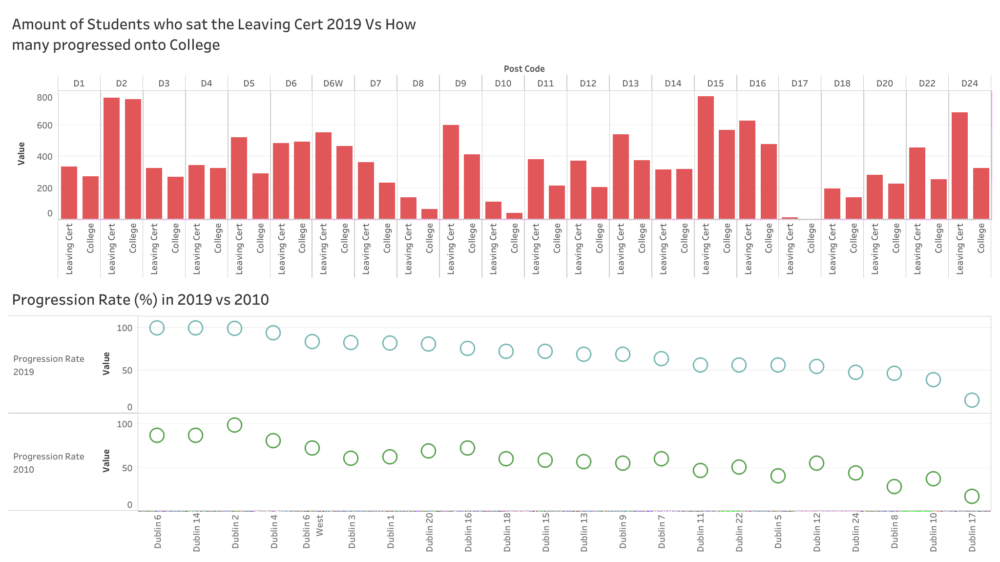

Progression Rates Visualisation
I have completed the Tableau Essential Training 2020.1 in May of 2020. I was interested in starting to visualise data that has always interested me. The course was over 4 hours long and very in depth. After completing the course I have decided to gather data and create my first visualisation.
 As I volunteer a lot and try to spread awareness about college, I find progression rates to be very interesting. I had to gather data from schooldays.ie , enter it into excel before I was able to play around with all the skills
I had learned in the Tableau Course. You can check out my data visualisation here.
From the dashboard you can see that in general the trend is upward, and more students who complete their Leaving Cert go on to College. However, it can be seen that the wealthier areas such as Dublin 2, have a 100% progression rate
compared to other areas in Dublin that aren't as wealthy.
Data Visualisation has helped me: